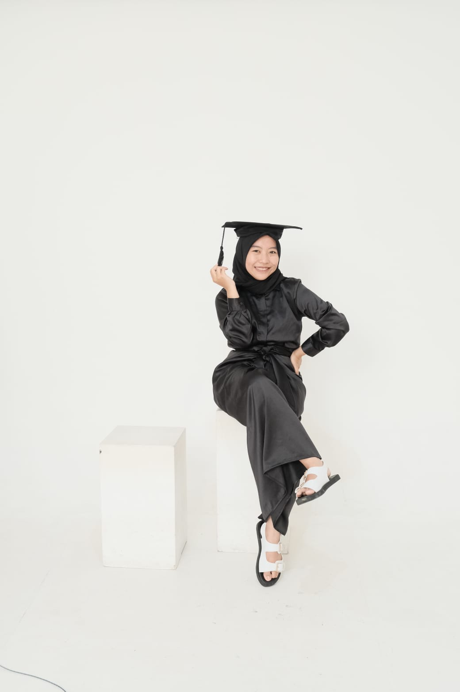

Ciee sekarang udah 19 tahun, otw berkepala 2 ni yee
Assalamu'alaikum Warrohmatullahi Wabarakatu
Oy yang lagi punya hari, Selamat ya. Kmu lebih tuek dri aku dan akan slalu bgitu. Semngat kuliahnya, jgn mikirin cwok dlu. Sumpah sometimes cwok tu penganggu saat kita lgi serius bljr wkwk.
Mumpung mu jomblo, terusin aja jomblonya. Tunggu yang pasti aja lik (Aku pingin kek gtu jga, tpi dh terlanjur). Mu lebih tau lah mslh cinta" an. So I hope you stay jomblo.
Semoga apa yang kmu inginkan dipermudah lik. Kuliahmu diperlancar sampai gradu, sampe nyarik kerja hbis kuliah moga diperlancar jga. Emang kita tu cma bsa buat rencana doang, urusan bkal terjdi atau enggaknya DOA aja dulu. Doa yang baik baik dah buat hari spesial yang menandakan umurmu berkurang (ya hrsnya berkurang kan. Gk tau ampek kpan umur kita, tapi setiap ulng thun so pasti umur yang udh ditentuin smpe berpa bkal berkurang) Semoga mendaptkan jodoh yg SHOLEHH.. bkn sholehot wkwkw
Btw kepanjangan ci aku ngetiknya. kasian kmu yg baca. Aku list aja dh ya inti dari semua nyaa, Amiinin lo semuanya, kita gk tau mna yg bkl dikabulin kan.
Intruksi penggunaan. Klik next pada button dibawah. Saat gambar kedua muncul, jangan terburu buru untuk melihat gambar ketiga. Tunggulah sampai ada suara yang muncul. Dan cara mematikan suaranya adalah, klik next sampai kmu bertemu dengan tulisan "HBD Julihah"
Good Luck. Keep Smile because senyum adalah ibadah wkwkw. You are beautiful. You are smart woman. You are the best :)
If you want a gift from me. Came on to my home
HBD Julihah